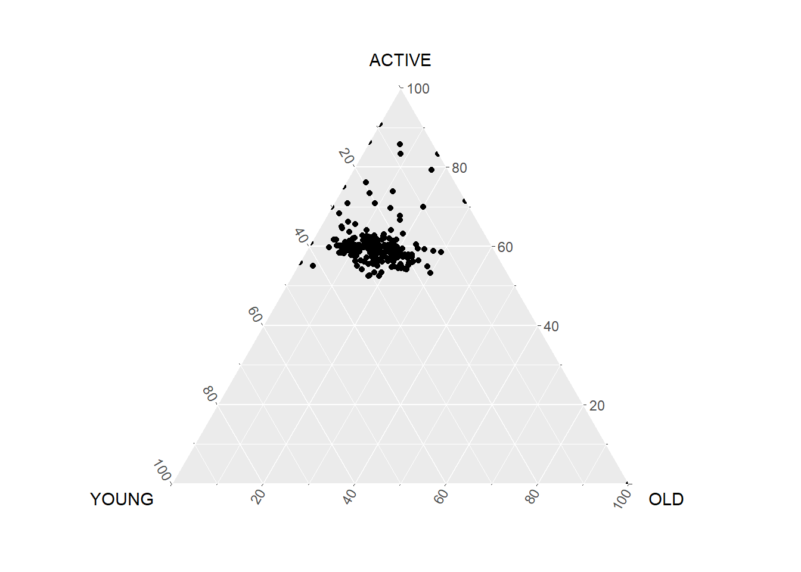
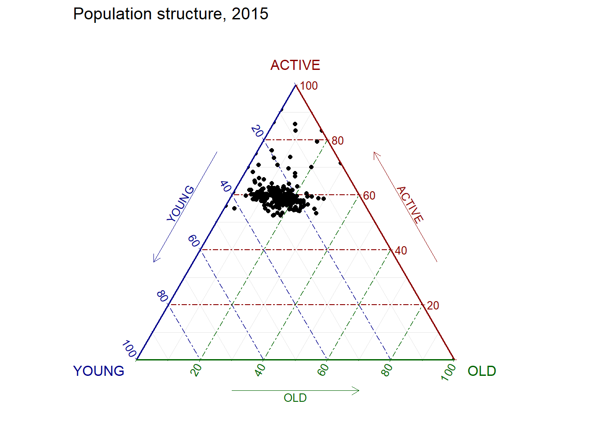
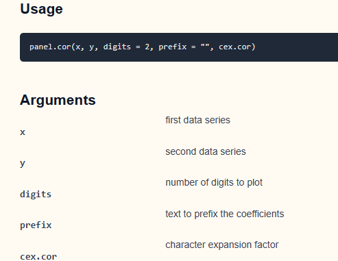
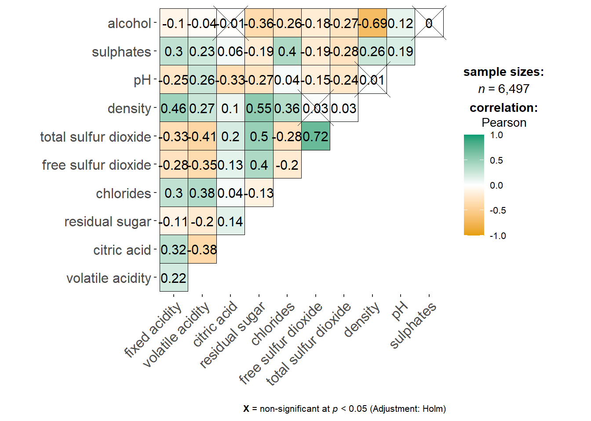
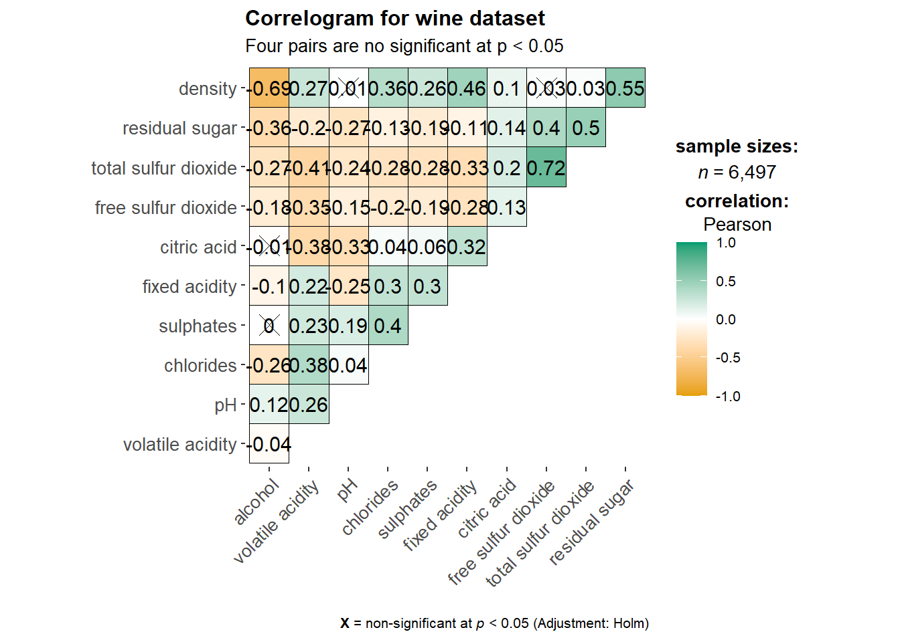
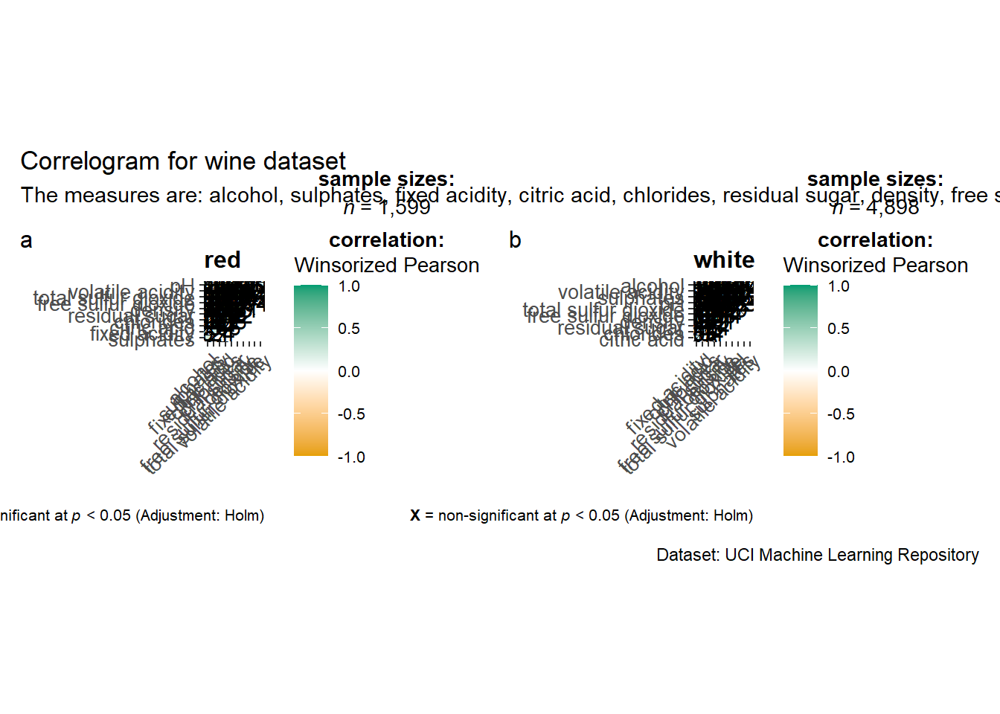

pacman::p_load(plotly, ggtern, tidyverse)test
ggtern, 基于 ggplot2 的扩展包，专门用来绘制 三元（Ternary）图。
Plotly R, an R package for creating interactive web-based graphs
13.3.1 The data
#Reading the data into R environment
pop_data <- read_csv("Hands-on_Ex09/data/respopagsex2000to2018_tidy.csv") Rows: 108126 Columns: 5
── Column specification ────────────────────────────────────────────────────────
Delimiter: ","
chr (3): PA, SZ, AG
dbl (2): Year, Population
ℹ Use `spec()` to retrieve the full column specification for this data.
ℹ Specify the column types or set `show_col_types = FALSE` to quiet this message.mutate()：在现有数据框上添加或修改列。
rowSums( .[, x:y] )：对当前数据框（用 . 代表）第 x 到 列的数据进行按行求和。
agpop_mutated_1 <- pop_data %>%
# 1. 把 Year 列从数值型转成字符型，方便后面做“宽表”展开
mutate(`Year` = as.character(Year)) %>%
# 2. 以 AG（Age Group，年龄组）为 key，把 Population（人口数）展开成多列，
# 每个年龄组一列，宽表（wide format）
spread(AG, Population)如果只是想 看前几行
head(agpop_mutated_1)# A tibble: 6 × 21
PA SZ Year `AGE0-4` `AGE05-9` `AGE10-14` `AGE15-19` `AGE20-24`
<chr> <chr> <chr> <dbl> <dbl> <dbl> <dbl> <dbl>
1 Ang Mo Kio Ang Mo K… 2011 290 340 290 290 270
2 Ang Mo Kio Ang Mo K… 2012 270 300 290 290 270
3 Ang Mo Kio Ang Mo K… 2013 260 310 270 270 280
4 Ang Mo Kio Ang Mo K… 2014 250 290 300 300 250
5 Ang Mo Kio Ang Mo K… 2015 260 290 320 290 260
6 Ang Mo Kio Ang Mo K… 2016 250 280 330 280 260
# ℹ 13 more variables: `AGE25-29` <dbl>, `AGE30-34` <dbl>, `AGE35-39` <dbl>,
# `AGE40-44` <dbl>, `AGE45-49` <dbl>, `AGE50-54` <dbl>, `AGE55-59` <dbl>,
# `AGE60-64` <dbl>, `AGE65-69` <dbl>, `AGE70-74` <dbl>, `AGE75-79` <dbl>,
# `AGE80-84` <dbl>, AGE85over <dbl>看每列的结构或摘要
summary(agpop_mutated_1) PA SZ Year AGE0-4
Length:6007 Length:6007 Length:6007 Min. : 0.0
Class :character Class :character Class :character 1st Qu.: 0.0
Mode :character Mode :character Mode :character Median : 160.0
Mean : 622.8
3rd Qu.: 840.0
Max. :10920.0
AGE05-9 AGE10-14 AGE15-19 AGE20-24
Min. : 0.0 Min. : 0.0 Min. : 0.0 Min. : 0.0
1st Qu.: 0.0 1st Qu.: 0.0 1st Qu.: 0.0 1st Qu.: 0.0
Median : 200.0 Median : 220.0 Median : 220.0 Median : 210.0
Mean : 707.2 Mean : 754.4 Mean : 760.5 Mean : 755.5
3rd Qu.: 940.0 3rd Qu.: 990.0 3rd Qu.: 1030.0 3rd Qu.: 1040.0
Max. :12900.0 Max. :12090.0 Max. :11860.0 Max. :11660.0
AGE25-29 AGE30-34 AGE35-39 AGE40-44
Min. : 0.0 Min. : 0.0 Min. : 0.0 Min. : 0.0
1st Qu.: 0.0 1st Qu.: 0.0 1st Qu.: 0.0 1st Qu.: 0.0
Median : 230.0 Median : 230.0 Median : 280.0 Median : 300.0
Mean : 837.1 Mean : 920.9 Mean : 977.2 Mean : 996.6
3rd Qu.: 1190.0 3rd Qu.: 1310.0 3rd Qu.: 1380.0 3rd Qu.: 1390.0
Max. :11430.0 Max. :12640.0 Max. :14560.0 Max. :14450.0
AGE45-49 AGE50-54 AGE55-59 AGE60-64
Min. : 0.0 Min. : 0.0 Min. : 0.0 Min. : 0.0
1st Qu.: 0.0 1st Qu.: 0.0 1st Qu.: 0.0 1st Qu.: 0.0
Median : 300.0 Median : 280.0 Median : 230.0 Median : 180.0
Mean : 966.3 Mean : 887.2 Mean : 729.6 Mean : 564.1
3rd Qu.: 1360.0 3rd Qu.: 1260.0 3rd Qu.: 1020.0 3rd Qu.: 820.0
Max. :13090.0 Max. :12730.0 Max. :12260.0 Max. :11090.0
AGE65-69 AGE70-74 AGE75-79 AGE80-84
Min. : 0.0 Min. : 0.0 Min. : 0.0 Min. : 0.0
1st Qu.: 0.0 1st Qu.: 0.0 1st Qu.: 0.0 1st Qu.: 0.0
Median : 140.0 Median : 90.0 Median : 70.0 Median : 40.0
Mean : 410.8 Mean : 287.2 Mean : 200.7 Mean : 120.6
3rd Qu.: 630.0 3rd Qu.: 450.0 3rd Qu.: 310.0 3rd Qu.: 180.0
Max. :7640.0 Max. :4300.0 Max. :2660.0 Max. :1670.0
AGE85over
Min. : 0.00
1st Qu.: 0.00
Median : 30.00
Mean : 95.92
3rd Qu.: 140.00
Max. :1400.00
Note
根据 上面的code 已经 将数据按照AG 进行拆分, 下面 可以 按照 年轻 分段 将他们进行分组
#Deriving the young, economy active and old measures
agpop_mutated <- pop_data %>%
mutate(`Year` = as.character(Year))%>%
spread(AG, Population) %>%
mutate(YOUNG = rowSums(.[4:8]))%>%
mutate(ACTIVE = rowSums(.[9:16])) %>%
mutate(OLD = rowSums(.[17:21])) %>%
mutate(TOTAL = rowSums(.[22:24])) %>%
filter(Year == 2018)%>%
filter(TOTAL > 0)Plotting a static ternary diagram
Use ggtern() function of ggtern package to create a simple ternary plot.
#Building the static ternary plot
ggtern(data=agpop_mutated,aes(x=YOUNG,y=ACTIVE, z=OLD)) +
geom_point()
Important
三个顶点（Vertex）
ACTIVE（顶端）：如果某个点恰好落在顶端，就是说该区域劳动年龄人口（ACTIVE）占了 100%，年轻（YOUNG）和老年（OLD）都几乎为 0。
YOUNG（左下）：落在左下角表示年轻人口占比最高。
OLD（右下）：落在右下角表示老年人口占比最高。
点的位置（Composition）
每一个黑点代表
agpop_mutated数据中某个子区域（SZ）在 2018 年的三个年龄段人口分量。点到三角形三条边的距离比例，分别对应该区域 YOUNG、ACTIVE、OLD 三个数值（在 ggtern 中会自动归一化到同一总量，比如 100%）
网格线和刻度
三角内部的细小网格和刻度（0–20–40–…–100）标出了各年龄段的百分比水平。
比如沿着底边向右看是 OLD 的占比，从 0% 到 100%；沿左边是 YOUNG，从 0% 到 100%；顶边向下是 ACTIVE
整体趋势
绝大多数点聚集在更靠近 ACTIVE（顶端）一点的位置，说明大部分子区域的劳动年龄人口占比最为主导（大约 60–80% 左右），年轻人口占比次之（约 20–40%），老年人口占比较低（通常低于 20%）。
#Building the static ternary plot
ggtern(data=agpop_mutated, aes(x=YOUNG,y=ACTIVE, z=OLD)) +
geom_point() +
labs(title="Population structure, 2015") +
theme_rgbw()
Note
解释 code
geom_point()在三角平面里为每一行数据画一个小圆点，展示三部分比例的组合位置。theme_rgbw()ggtern提供的黑白（RGBW）主题，主要是修改背景、网格线和文字颜色，让图看起来更简洁、论文风格。
Plotting an interative ternary diagram
# reusable function for creating annotation object
label <- function(txt) {
list(
text = txt, # 注释文字内容
x = 0.1, y = 1, # 在“画布”坐标（paper）中的位置
ax = 0, ay = 0,
xref = "paper", yref = "paper",
align = "center", # 文字居中对齐
font = list(family = "serif", size = 15, color = "white"),
bgcolor = "#b3b3b3", bordercolor = "black", borderwidth = 2
)
}
# reusable function for axis formatting
axis <- function(txt) {
list(
title = txt, # 轴标题
tickformat = ".0%", # 刻度显示百分比、无小数
tickfont = list(size = 10)
)
}
ternaryAxes <- list(
aaxis = axis("Young"),
baxis = axis("Active"),
caxis = axis("Old")
)
# Initiating a plotly visualization
plot_ly(
agpop_mutated,
a = ~YOUNG,
b = ~ACTIVE,
c = ~OLD,
color = I("black"),
type = "scatterternary" #指定画三元散点图。
) %>%
layout(
annotations = label("Ternary Markers"),
ternary = ternaryAxes
)No scatterternary mode specifed:
Setting the mode to markers
Read more about this attribute -> https://plotly.com/r/reference/#scatter-modeVisual Correlation Analysis
相关系数(Correlation coefficien)是一种常用的统计量，用于衡量两个变量之间关系的类型和强度。相关系数的取值范围在 -1.0 和 1.0 之间。相关系数为 1 表示两个变量之间存在完美的线性关系，而 -1.0 则表示两个变量之间存在完美的反向关系。相关系数为 0.0 则表示两个变量之间没有线性关系。
When multivariate data are used, the correlation coefficeints of the pair comparisons are displayed in a table form known as correlation matrix or scatterplot matrix.
计算相关矩阵主要有三个原因。
揭示高维变量之间的配对关系。 为其他分析提供输入。
人们通常使用相关矩阵作为探索性因素分析、确认性因素分析、结构方程模型和线性回归的输入，同时排除缺失值配对。
检查其他分析时用作诊断。例如，在线性回归中，高相关性表明线性回归的估计值不可靠。
First, you will learn how to create correlation matrix using pairs() of R Graphics.
Next, you will learn how to plot corrgram using corrplot package of R. corrgram：专门用来绘制相关图，支持多种面板样式；
Lastly, you will learn how to create an interactive correlation matrix using plotly R.
Installing and Launching R Packages
launch corrplot, ggpubr, plotly and tidyverse in RStudio.
pacman::p_load(corrplot, ggstatsplot, tidyverse)wine <- read_csv("Hands-on_Ex09/data/wine_quality.csv")Rows: 6497 Columns: 13
── Column specification ────────────────────────────────────────────────────────
Delimiter: ","
chr (1): type
dbl (12): fixed acidity, volatile acidity, citric acid, residual sugar, chlo...
ℹ Use `spec()` to retrieve the full column specification for this data.
ℹ Specify the column types or set `show_col_types = FALSE` to quiet this message.summary(wine) fixed acidity volatile acidity citric acid residual sugar
Min. : 3.800 Min. :0.0800 Min. :0.0000 Min. : 0.600
1st Qu.: 6.400 1st Qu.:0.2300 1st Qu.:0.2500 1st Qu.: 1.800
Median : 7.000 Median :0.2900 Median :0.3100 Median : 3.000
Mean : 7.215 Mean :0.3397 Mean :0.3186 Mean : 5.443
3rd Qu.: 7.700 3rd Qu.:0.4000 3rd Qu.:0.3900 3rd Qu.: 8.100
Max. :15.900 Max. :1.5800 Max. :1.6600 Max. :65.800
chlorides free sulfur dioxide total sulfur dioxide density
Min. :0.00900 Min. : 1.00 Min. : 6.0 Min. :0.9871
1st Qu.:0.03800 1st Qu.: 17.00 1st Qu.: 77.0 1st Qu.:0.9923
Median :0.04700 Median : 29.00 Median :118.0 Median :0.9949
Mean :0.05603 Mean : 30.53 Mean :115.7 Mean :0.9947
3rd Qu.:0.06500 3rd Qu.: 41.00 3rd Qu.:156.0 3rd Qu.:0.9970
Max. :0.61100 Max. :289.00 Max. :440.0 Max. :1.0390
pH sulphates alcohol quality
Min. :2.720 Min. :0.2200 Min. : 8.00 Min. :3.000
1st Qu.:3.110 1st Qu.:0.4300 1st Qu.: 9.50 1st Qu.:5.000
Median :3.210 Median :0.5100 Median :10.30 Median :6.000
Mean :3.219 Mean :0.5313 Mean :10.49 Mean :5.818
3rd Qu.:3.320 3rd Qu.:0.6000 3rd Qu.:11.30 3rd Qu.:6.000
Max. :4.010 Max. :2.0000 Max. :14.90 Max. :9.000
type
Length:6497
Class :character
Mode :character
Building Correlation Matrix: pairs() method
pairs(wine[, 1:11])
Note
pairs()是 R 语言基础绘图（graphics）包中的函数，用于一次性绘制多变量之间的两两散点图。wine[, 1:11]
wine是一个数据框（data.frame）[, 1:11]表示对wine取行的所有观测（留空表示“全行”），以及第1 列到第 11 列这 11 个变量。
pairs(wine[,2:12])
Columns 2 to 12 of wine dataframe is used to build the scatterplot matrix.
The variables are: fixed acidity, volatile acidity, citric acid, residual sugar, chlorides, free sulfur dioxide, total sulfur dioxide, density, pH, sulphates and alcohol.
Drawing the lower corner
It is a common practice to show either the upper half or lower half of the correlation matrix instead of both. This is because a correlation matrix is symmetric.
pairs(wine[,2:12], upper.panel = NULL)
pairs(wine[,2:12], lower.panel = NULL)
Including with correlation coefficients
To show the correlation coefficient of each pair of variables instead of a scatter plot, panel.cor function will be used. This will also show higher correlations in a larger font.

panel.cor <- function(x, y, digits=2, prefix="", cex.cor, ...) {
#保存当前绘图的坐标系统参数（usr），以便后面恢复
usr <- par("usr")
on.exit(par(usr))
par(usr = c(0, 1, 0, 1)) #将坐标系统临时改成 [0,1]×[0,1]，
r <- abs(cor(x, y, use="complete.obs")) #Calculate the Pearson's correlation coefficients for x and y (excluding missing values) and take the absolute value
#将相关系数格式化成字符，保留 digits 位小数
#这里用 c(r,0.123456789)[1] 的技巧防止单个数字格式化出错
txt <- format(c(r, 0.123456789), digits=digits)[1]
txt <- paste(prefix, txt, sep="")
if(missing(cex.cor)) cex.cor <- 0.8/strwidth(txt)
text(0.5, 0.5, txt, cex = cex.cor * (1 + r) / 2)
}
pairs(wine[,2:12],
upper.panel = panel.cor)Warning in par(usr): argument 1 does not name a graphical parameter
Warning in par(usr): argument 1 does not name a graphical parameter
Warning in par(usr): argument 1 does not name a graphical parameter
Warning in par(usr): argument 1 does not name a graphical parameter
Warning in par(usr): argument 1 does not name a graphical parameter
Warning in par(usr): argument 1 does not name a graphical parameter
Warning in par(usr): argument 1 does not name a graphical parameter
Warning in par(usr): argument 1 does not name a graphical parameter
Warning in par(usr): argument 1 does not name a graphical parameter
Warning in par(usr): argument 1 does not name a graphical parameter
Warning in par(usr): argument 1 does not name a graphical parameter
Warning in par(usr): argument 1 does not name a graphical parameter
Warning in par(usr): argument 1 does not name a graphical parameter
Warning in par(usr): argument 1 does not name a graphical parameter
Warning in par(usr): argument 1 does not name a graphical parameter
Warning in par(usr): argument 1 does not name a graphical parameter
Warning in par(usr): argument 1 does not name a graphical parameter
Warning in par(usr): argument 1 does not name a graphical parameter
Warning in par(usr): argument 1 does not name a graphical parameter
Warning in par(usr): argument 1 does not name a graphical parameter
Warning in par(usr): argument 1 does not name a graphical parameter
Warning in par(usr): argument 1 does not name a graphical parameter
Warning in par(usr): argument 1 does not name a graphical parameter
Warning in par(usr): argument 1 does not name a graphical parameter
Warning in par(usr): argument 1 does not name a graphical parameter
Warning in par(usr): argument 1 does not name a graphical parameter
Warning in par(usr): argument 1 does not name a graphical parameter
Warning in par(usr): argument 1 does not name a graphical parameter
Warning in par(usr): argument 1 does not name a graphical parameter
Warning in par(usr): argument 1 does not name a graphical parameter
Warning in par(usr): argument 1 does not name a graphical parameter
Warning in par(usr): argument 1 does not name a graphical parameter
Warning in par(usr): argument 1 does not name a graphical parameter
Warning in par(usr): argument 1 does not name a graphical parameter
Warning in par(usr): argument 1 does not name a graphical parameter
Warning in par(usr): argument 1 does not name a graphical parameter
Warning in par(usr): argument 1 does not name a graphical parameter
Warning in par(usr): argument 1 does not name a graphical parameter
Warning in par(usr): argument 1 does not name a graphical parameter
Warning in par(usr): argument 1 does not name a graphical parameter
Warning in par(usr): argument 1 does not name a graphical parameter
Warning in par(usr): argument 1 does not name a graphical parameter
Warning in par(usr): argument 1 does not name a graphical parameter
Warning in par(usr): argument 1 does not name a graphical parameter
Warning in par(usr): argument 1 does not name a graphical parameter
Warning in par(usr): argument 1 does not name a graphical parameter
Warning in par(usr): argument 1 does not name a graphical parameter
Warning in par(usr): argument 1 does not name a graphical parameter
Warning in par(usr): argument 1 does not name a graphical parameter
Warning in par(usr): argument 1 does not name a graphical parameter
Warning in par(usr): argument 1 does not name a graphical parameter
Warning in par(usr): argument 1 does not name a graphical parameter
Warning in par(usr): argument 1 does not name a graphical parameter
Warning in par(usr): argument 1 does not name a graphical parameter
Warning in par(usr): argument 1 does not name a graphical parameter
Visualising Correlation Matrix: ggcormat()
The basic plot
On of the advantage of using ggcorrmat() over many other methods to visualise a correlation matrix is it’s ability to provide a comprehensive and yet professional statistical report as shown in the figure below.
ggstatsplot::ggcorrmat():用来一键生成带统计检验结果的相关矩阵图（correlation matrix）
计算多个变量的两两相关系数（默认是 Pearson，也支持 Spearman／Kendall）
t-test 或者非参数检验,并把 p 值标注在图上
用色块热图（tile）＋文本标签 的方式同时展现相关系数大小、正负方向与显著性
ggstatsplot::ggcorrmat(
data = wine,
cor.vars = 1:11)
add title and subtitle
ggstatsplot::ggcorrmat(
data = wine,
cor.vars = 1:11, #取 wine 的第 1 列到第 11 列这 11 个变量来做两两相关分析。
ggcorrplot.args = list(outline.color = "black", #每个色块边框用黑色描边
hc.order = TRUE, #对变量名进行 hierarchical clustering（层次聚类）排序，把相关性强的变量自动排得更靠近。
tl.cex = 10# text label 字号大小设为 10
),
title = "Correlogram for wine dataset", #给整张图加上主标题
subtitle = "Four pairs are no significant at p < 0.05"
)
Note
cor.varsargument is used to compute the correlation matrix needed to build the corrgram.ggcorrmat()已经在内部给ggcorrplot()传递了一些核心参数（比如相关矩阵corr、计算方法method、显著性水平sig.level、主题ggtheme、调色板colors、是否显示数值lab、符号标记pch、图例标题legend.title、小数位数digits等）。 因此，不要在ggcorrplot.args里再包含这些参数，否则会和内部设置冲突或被覆盖。
Building multiple plots
grouped_ggcorrmat(
data = wine,
cor.vars = 1:11,
grouping.var = type,
type = "robust",
p.adjust.method = "holm",
plotgrid.args = list(ncol = 2),
ggcorrplot.args = list(outline.color = "black",
hc.order = TRUE,
tl.cex = 10),
annotation.args = list(
tag_levels = "a",
title = "Correlogram for wine dataset",
subtitle = "The measures are: alcohol, sulphates, fixed acidity, citric acid, chlorides, residual sugar, density, free sulfur dioxide and volatile acidity",
caption = "Dataset: UCI Machine Learning Repository"
)
)